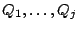
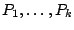
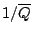
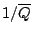

The frequency response of a series of elementary recirculating and
non-recirculating filters can be estimated graphically by plotting all the
coefficients
 and
 on the
complex plane and reasoning as in Figure 8.8. The overall
frequency response is the product of all the distances from the point  to each of the
to each of the  , divided by the product of the distances to each of
the
, divided by the product of the distances to each of
the  .
.
One customarily marks each of the  with an ``o" (calling it a ``zero")
and each of the
with an ``o" (calling it a ``zero")
and each of the  with an ``x" (a ``pole"); their names are borrowed
from the field of complex analysis. A plot showing the poles and zeroes
associated with a filter is unimaginatively called a pole-zero plot.
with an ``x" (a ``pole"); their names are borrowed
from the field of complex analysis. A plot showing the poles and zeroes
associated with a filter is unimaginatively called a pole-zero plot.
When  is
close to a zero the frequency response tends to dip, and when it is close to
a pole, the frequency response tends to rise. The effect of a pole or a zero
is more pronounced, and also more local, if it is close to the unit circle
that
is
close to a zero the frequency response tends to dip, and when it is close to
a pole, the frequency response tends to rise. The effect of a pole or a zero
is more pronounced, and also more local, if it is close to the unit circle
that  is constrained to lie on.
Poles must lie within the unit circle for a stable filter. Zeros may lie on
or outside it, but any zero
is constrained to lie on.
Poles must lie within the unit circle for a stable filter. Zeros may lie on
or outside it, but any zero  outside the unit circle may be replaced by one
within it, at the point
, to give a constant multiple of the
same frequency response. Except in special cases we will keep the zeros
inside the circle as well as the poles.
outside the unit circle may be replaced by one
within it, at the point
, to give a constant multiple of the
same frequency response. Except in special cases we will keep the zeros
inside the circle as well as the poles.
In the rest of this section we will show how to construct several of the filter types most widely used in electronic music. The theory of digital filter design is vast, and we will only give an introduction here. A deeper treatment is available online from Julius Smith at ccrma.stanford.edu. See also [Ste96] for an introduction to filter design from the more general viewpoint of digital signal processing.